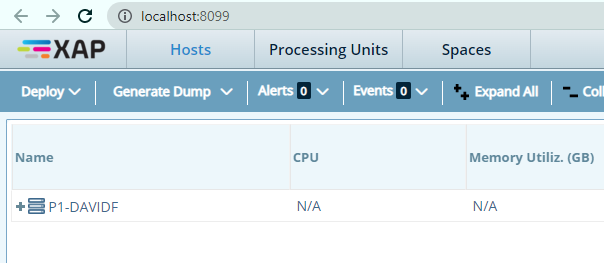
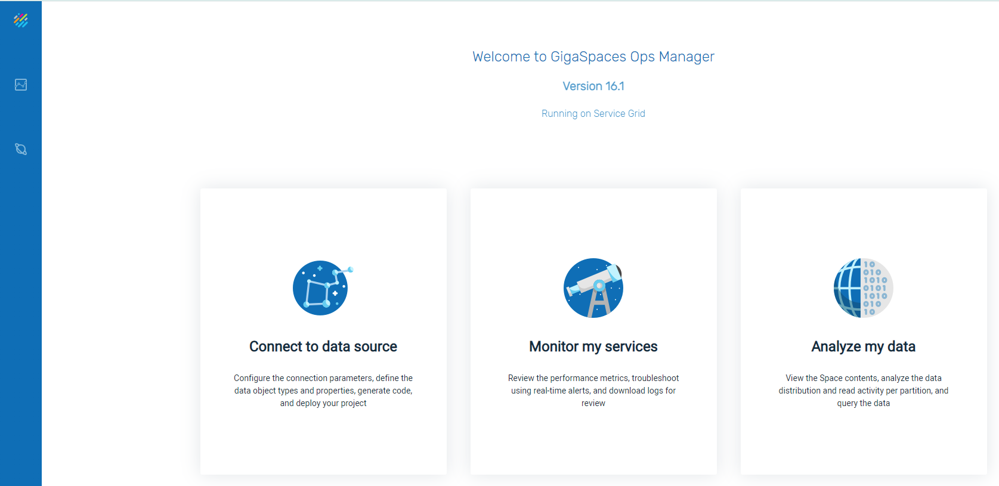
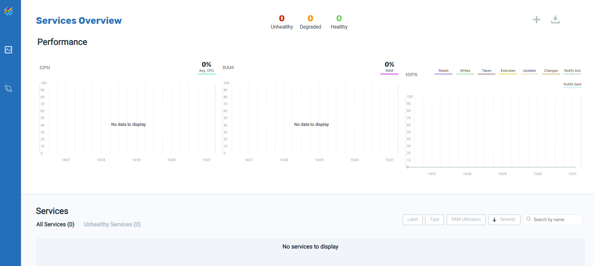
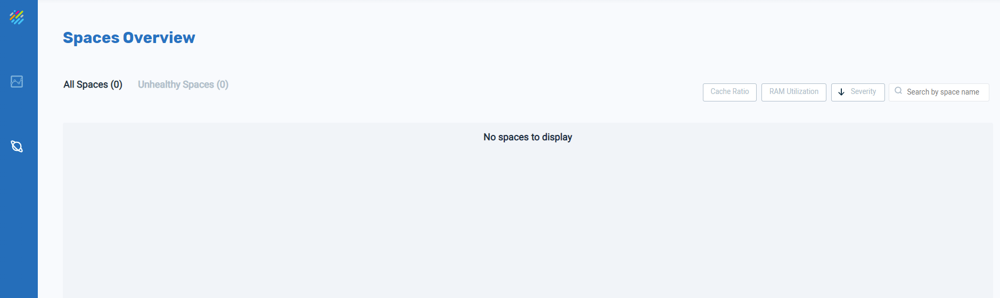

We will use this window to pull the Postgres database into
This topic is a hands/on introduction to GigaSpaces SmartCache. It is designed to give you a quick, easy introduction to the GigaSpaces system.
This introduction consists of three parts:
Part 2 — Launch Ops Manager (this topic) — Run and view the GigaSpaces GUI.
Need assistance or further information? Don't hesitate to contact us — we're here to help!
Ops Manager is the graphical interface to the GigaSpaces environment. Wit it, we can import data, deploy services and Spaces, view the status of the system, modify the deployment, and run SQL commands against the in-memory data.
The GigaSpaces Manager controls the GigaSpaces environment and enables the Ops Manager GUI.
1. Open a command line in the bin directory of your GigaSpaces installation, and run this command:
gs host run-agent --auto
After a few moments, a browser window will open:

2. Change the URL to the following: http://localhost:8090
The Ops Manager window will open:

We will use this window to pull the Postgres database into

Initially no services are running. We will revisit this screen after we deploy a service.

We will see some Space information after we deploy the Postgres database.
In
Need assistance or further information? Don't hesitate to contact us — we're here to help!